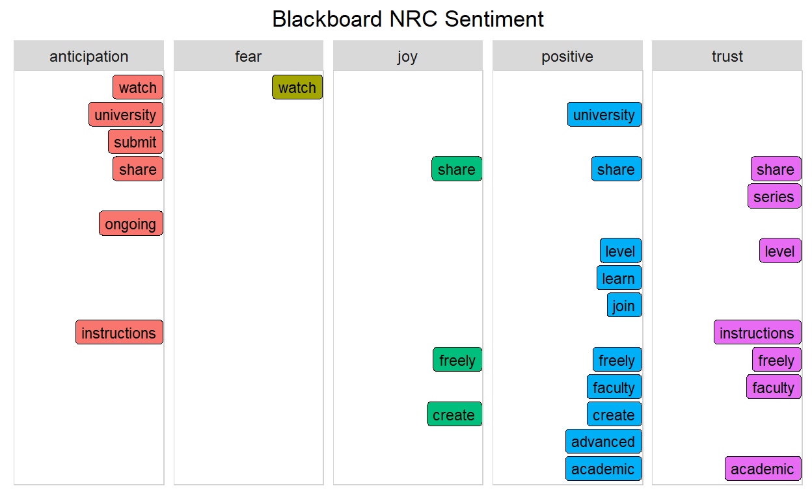

A Project using Twitter Data of four popular Learning Management Systems
In today’s society, it is pretty normal to share your opinion about a product or service through Social Media platforms like Facebook, Instagram or Twitter. Organizations want to know public views on their products and services to optimize their customer base and revenue. The public also wants to understand public opinion before buying or using an organization’s product or service.
In public and private programs, the education of students and employees relies heavily on using the right Learning Management System (LMS) to share information and educate in K-12, University, for-profit or non-profit sectors. Today, we are in a time of uncertainty. It is more important than ever to choose the suitable LMS as you may need to “go online” at the drop of a hat or instead do I dare shutter the word - “quarantine.” The investment is too significant not to understand the users’ sentiments on using the most popular Learning Management Systems on the market today; Google Classroom, Canvas, Moodle, and Blackboard.
One way to understand a Learning Management Systems strengths and weaknesses are by pulling public opinion from Twitter API to evaluate using an Unstructured ML approach with Text (opinion) Mining and Sentiment Analysis. We will assess the public sentiment of these four popular Learning Management Systems, identifying public sentiment and by asking the following questions:
What are the most frequent words used in reference to tweets about four popular Learning Management Systems?
Which Learning Management System is the most popular in tweets from January 30 - February 1, 2022.
How does the current sentiments in each lexicon compare between:
Google Classroom
Canvas
Moodle
Blackboard
Let’s first load our libraries to read in packages that we will use to answer our questions. Additionally, let’s set colors to use throughout and write a function to save in our Global Environment to use later with ggplot in the MODEL Section.
#Instal packages for wrangling
library(dplyr)
library(tidyverse)
library(readr)
library(tidyr)
library(rtweet)
library(writexl)
library(readxl)
library(tidytext)
library(textdata)
# for visualizations
library(ggplot2)
library(scales)
library(wordcloud2)
library(gridExtra)
library(knitr)
library(kableExtra)
library(formattable)
library(yarrr)
library(radarchart)
library(igraph)
library(ggraph)
#Define some colors to use throughout
my_colors <- c("#E69F00", "#56B4E9", "#009E73", "#CC79A7", "#D55E00", "#D65E00")
#Customize ggplot2's default theme settings
theme_lms <- function(aticks = element_blank(),
pgminor = element_blank(),
lt = element_blank(),
lp = "none")
{
theme(plot.title = element_text(hjust = 0.5), #Center the title
axis.ticks = aticks, #Set axis ticks to on or off
panel.grid.minor = pgminor, #Turn the minor grid lines on or off
legend.title = lt, #Turn the legend title on or off
legend.position = lp) #Turn the legend on or off
}
To begin, after loading the libraries, we connect to the Twitter Resting API and pull tweets for Google Classroom, Canvas, Blackboard, and Moodle Learning Management Systems. You will not view the codes used to connect to Twitter API as I saved them to a get_token() function. I use the get_token function to connect directly to Twitter’s Resting API.
To know which hashtags or words to pull tweets with, I went directly to Twitter and searched the LMS names to view the results. Canvas and Blackboard were tricky since the name “Canvas” is closely associated with art and links to companies like Micheal’s Craft Store, which sells different art canvas sizes for painters. Blackboard is closely associated with a Game that I was not familiar with. Since Twitter changes and restrictions on the dates and amount of tweets you can pull, we will write the data files to save and read in a later code chunk.
#connect to Twitter API
get_token()
#PULL Google Classroom
gc_dictionary <- c("#Google Classroom", '"Google Classroom"')
gctweets <-
gc_dictionary %>%
search_tweets2(n=5000, include_rts = FALSE)
#write to save
gc_tweets <- write_xlsx(gctweets, "data/gctweets.xlsx")
#PULL Canvas LMS
canvas_dictionary <- c("#canvas", '"Canvas lms"')
canvastweets <-
canvas_dictionary %>%
search_tweets2(n=5000, include_rts = FALSE)
#write to save
canvastweets <- write_xlsx(canvastweets, "data/canvastweets.xlsx")
#PULL Blackboard tweets and save as excel file
bb_dictionary <- c("#blackboard lms", '"blackboard lms"')
blackboardtweets <-
bb_dictionary %>%
search_tweets2(n=5000, include_rts = FALSE)
#write to save
blackboard_tweets <- write_xlsx(blackboardtweets, "data/blackboard.xlsx")
#PULL Moodle tweets and save as excel file
moodle_dictionary <- c("#moodle lms", '"Moodle"')
moodletweets <-
moodle_dictionary %>%
search_tweets2(n=5000, include_rts = FALSE)
#write to save
moodletweets <- write_xlsx(moodletweets, "data/moodle.xlsx")
#read in previously pulled tweets for Google Classroom, Blackboard and Canvas
gc_tweets <- read_xlsx("data/gctweets.xlsx")
bb_tweets <- read_xlsx("data/blackboard.xlsx")
canvas_tweets <- read_xlsx("data/canvastweets.xlsx")
moodle_tweets <- read_xlsx("data/moodle.xlsx")
#subset rows and colums in the english language, add a column for quickly identifying the LMS software.
gc_text <- gc_tweets %>%
filter(lang == "en") %>%
select(screen_name, created_at, text)%>%
mutate(lms = "Google Classroom") %>%
relocate(lms)
bb_text <- bb_tweets %>%
filter(lang == "en") %>%
select(screen_name, created_at, text) %>%
mutate(lms = "Blackboard") %>%
relocate(lms)
canvas_text <- canvas_tweets %>%
filter(lang == "en") %>%
select(screen_name, created_at, text) %>%
mutate(lms = "Canvas")%>%
relocate(lms)
moodle_text <- moodle_tweets %>%
filter(lang == "en") %>%
select(screen_name, created_at, text) %>%
mutate(lms = "Moodle")%>%
relocate(lms)
#combine data frames
tweets <- bind_rows(canvas_text, gc_text, moodle_text, bb_text)
tweets <- tibble::rowid_to_column(tweets, "index") #add unique identifier
| index | lms | screen_name | created_at | text |
|---|---|---|---|---|
| 1 | Canvas | VanOnCanvas | 2022-02-03 21:05:25 | https://t.co/dhhQo2XrgM Vancouver Shiny Resin Clear Coatings on #Canvas |
| 2 | Canvas | LucentDesigns | 2022-02-03 21:04:29 |
<U+2728> Here’s the next #WIP preview on my next #watercolor #canvas #painting project! Current progress is about 60% complete. I will post more updates soon! See the rest of my works in the meantime! <U+0001F3A8> DeviantArt Paintings Gallery: https://t.co/cdlb8TcO0d #rtArtBoost #art https://t.co/aDnFYVmqJ4 |
| 3 | Canvas | LucentDesigns | 2022-02-03 09:54:26 |
#ThrowbackThursday! Here’s an early art piece I painted a few years back, using a black ink graphic pen and acrylic on canvas. Let me know what you think! <U+2764><U+FE0F> See more of my paintings here: https://t.co/gqvZtTrR4J #Painting #Canvas #tbt #Art #rtArtBoost https://t.co/Dd2y9u9ecT |
| 4 | Canvas | LucentDesigns | 2022-02-02 01:26:21 |
<U+2728> Here’s the next #WIP preview on my next #watercolor #canvas #painting project! Current progress is about 20% complete. I will post more progress updates soon! See the rest of my works in the meantime! <U+0001F3A8> DeviantArt Paintings Gallery: https://t.co/cdlb8TcO0d #rtArtBoost #art https://t.co/YGzAXUi2Pd |
| 5 | Canvas | LucentDesigns | 2022-01-27 08:54:22 |
#ThrowbackThursday! Here’s a really early canvas art piece I painted a few years back, let me know what you think! <U+2764><U+FE0F> See more of my paintings here: https://t.co/gqvZtTrR4J #Painting #Canvas #tbt #Art #rtArtBoost https://t.co/mmdfWw5WG3 |
| 6 | Canvas | laistakanashi | 2022-02-03 20:44:09 | Little corner in my studio ! #Art #FineArt #Artist #Studio #ArtGallery #ModernArt #Picasso #Drawing #Painting #Canvas #SalvadorDalí #Manga #Vinyl #StreetFighter #Monet https://t.co/aNSHkyrktr |
We will tidy our text using the tidytext and dplyr packages to split the text into tokens creating a table with one-token-per-row. The token is under a column called word(). Another step to tidy the text is to remove the most common stop words such as a, the, is, are and etc. As mentioned previously, “art” is commonly connected to Canvas; therefore, we need to filter out “art.” We will take another look at the head of our tokenized text.
| index | lms | screen_name | created_at | word |
|---|---|---|---|---|
| 1 | Canvas | VanOnCanvas | 2022-02-03 21:05:25 | https://t.co/dhhqo2xrgm |
| 1 | Canvas | VanOnCanvas | 2022-02-03 21:05:25 | vancouver |
| 1 | Canvas | VanOnCanvas | 2022-02-03 21:05:25 | shiny |
| 1 | Canvas | VanOnCanvas | 2022-02-03 21:05:25 | resin |
| 1 | Canvas | VanOnCanvas | 2022-02-03 21:05:25 | coatings |
| 1 | Canvas | VanOnCanvas | 2022-02-03 21:05:25 | #canvas |
In this section we will explore word counts by ungrouping the tokenized words to view in a word cloud.
We can get a sense of the most common words in the combined LMS Sentiment Analysis by looking at a word cloud of the word counts. By looking at the top 50 words from the word count, we can see that #Classroom, #Canvas, and Moodle are very popular within the Tweets, along with Moodle.
The Frequency Rank data table exhibits a new column showing we measured the importance of a word by how frequently a word occurs in the tweet.
By calculating the term frequency logarithmically, we can see the inversely proportional relationship of the negative slope for each LMS. In the log-log plotted diagram, we see a lot of deviation at various rank levels. The deviations at the lower rank show that the various LMS tweets use a lower percentage of the most common words than many collections of language.
words_by_LMS <- tidy_tweets%>%
count(lms, word, sort = TRUE) %>%
ungroup()
total_words <- words_by_LMS %>%
group_by(lms) %>%
summarize(total = sum(n))
words_by_LMS <- left_join(words_by_LMS, total_words)
freq_by_rank <- words_by_LMS %>%
group_by(lms) %>%
mutate(rank = row_number(),
`term frequency` = n/total) %>%
ungroup()
| lms | word | n | total | rank | term frequency |
|---|---|---|---|---|---|
| Canvas | #canvas | 1969 | 43536 | 1 | 0.0452269 |
| Google Classroom | 1773 | 23982 | 1 | 0.0739304 | |
| Google Classroom | classroom | 1710 | 23982 | 2 | 0.0713035 |
| Moodle | moodle | 717 | 10316 | 1 | 0.0695037 |
| Canvas | pay | 549 | 43536 | 2 | 0.0126103 |
| Canvas | due | 445 | 43536 | 3 | 0.0102214 |
freq_by_rank %>%
ggplot(aes(rank, `term frequency`, color = lms)) +
geom_line(size = 1.1, alpha = 0.8, show.legend = TRUE) +
scale_x_log10() +
scale_y_log10() +
labs()
To evaluate sentiment for each lexicon: Bing, NRC, AFINN and Loughran we will first load them, evaluate each sentiment and bind them into one summary sentiment data frame. Secondly, we will compare Sentiment using the NRC Lexicon. I chose this lexicon after reading that it has a more accurate sentiment scale for shorter texts.
Here we will load the sentiment lexicons and then rate the words according to the lexicon identifier, joining each separate data frame into one called summary_sentiment(). a. The first table in this section shows the combined data frame. b. The bar graph below allows visualization for the summary_sentiment() data frame.
In both the summary_sentiment() data frame and the bar graph, we see that each LMS is overly positive. Canvas has the most unique words, and Blackboard with the least total words. Further, we can conclude that during the period, Canvas is the most talked about on Twitter from January 30 - February 1, 2022.
afinn <- get_sentiments("afinn")
nrc <- get_sentiments("nrc")
bing <- get_sentiments("bing")
loughran <- get_sentiments("loughran")
sentiment_afinn <- inner_join(tidy_tweets, afinn, by = "word")
sentiment_bing <- inner_join(tidy_tweets, bing, by = "word")
sentiment_nrc <- inner_join(tidy_tweets, nrc, by = "word")
sentiment_loughran <- inner_join(tidy_tweets, loughran, by = "word")
summary_afinn2 <- sentiment_afinn %>%
group_by(lms) %>%
filter(value != 0) %>%
mutate(sentiment = if_else(value < 0, "negative", "positive")) %>%
count(sentiment, sort = TRUE) %>%
mutate(method = "AFINN")
summary_bing2 <- sentiment_bing %>%
group_by(lms) %>%
count(sentiment, sort = TRUE) %>%
mutate(method = "bing")
summary_nrc2 <- sentiment_nrc %>%
filter(sentiment %in% c("positive", "negative")) %>%
group_by(lms) %>%
count(sentiment, sort = TRUE) %>%
mutate(method = "nrc")
summary_loughran2 <- sentiment_loughran %>%
filter(sentiment %in% c("positive", "negative")) %>%
group_by(lms) %>%
count(sentiment, sort = TRUE) %>%
mutate(method = "loughran")
summary_sentiment <- bind_rows(summary_afinn2,
summary_bing2,
summary_nrc2,
summary_loughran2) %>%
arrange(method, lms) %>%
relocate(method)
| method | lms | sentiment | n |
|---|---|---|---|
| AFINN | Blackboard | positive | 4 |
| AFINN | Canvas | negative | 730 |
| AFINN | Canvas | positive | 583 |
| AFINN | Google Classroom | positive | 881 |
| AFINN | Google Classroom | negative | 476 |
| AFINN | Moodle | positive | 385 |
ggplot(summary_sentiment, aes(n, sentiment, fill = lms)) +
geom_col(show.legend = FALSE) +
facet_wrap(~lms, ncol = 2, scales = "free_x")
#create a new data frame that has the total word counts for each LMS and each method
total_counts <- summary_sentiment %>%
group_by(method, lms) %>%
summarise(total = sum(n))
#join to the summary_sentiment data frame
sentiment_counts <- left_join(summary_sentiment, total_counts)
#calculates the percentage of positive and negative words for each LMS
sentiment_percents <- sentiment_counts %>%
mutate(percent = n/total * 100)
| method | lms | sentiment | n | total | percent |
|---|---|---|---|---|---|
| AFINN | Blackboard | positive | 4 | 4 | 100.00000 |
| AFINN | Canvas | negative | 730 | 1313 | 55.59787 |
| AFINN | Canvas | positive | 583 | 1313 | 44.40213 |
| AFINN | Google Classroom | positive | 881 | 1357 | 64.92262 |
| AFINN | Google Classroom | negative | 476 | 1357 | 35.07738 |
| AFINN | Moodle | positive | 385 | 641 | 60.06240 |
sentiment_percents %>%
ggplot(aes(x = lms, y = percent, fill=sentiment)) +
geom_bar(width = .8, stat = "identity") +
facet_wrap(~method, ncol = 1) +
coord_flip() +
labs(title = "Public Sentiment on Twitter",
subtitle = "Google Classroom, Moodle, Canvas & BlackBoard ",
x = "Learning Management System",
y = "Percentage of Words")
It is essential to look at a time graph to visualize a sentiment spike throughout data collection. Insights from this type of graph would allow for further investigation. This particular plot looks at NRC sentiment for all LMS during Twitter data collection. Interestingly it shows that between January 30 - February 1 fear, disgust, and pain sentiment seems to increase with negative emotions. This spike indicates that further investigation is needed to understand the cause.
library(ggjoy)
ggplot(sentiment_nrc) +
geom_joy(aes(
x = created_at,
y = sentiment,
fill = sentiment),
rel_min_height = 0.01,
alpha = 0.7,
scale = 3) +
theme_joy() +
labs(title = "LMS Twitter NRC Sentiment during 1/26/22 - 2/5/22 ",
x = "Tweet Date",
y = "Sentiment") +
scale_fill_discrete(guide=FALSE)
Finally, let’s also look at the common words within categories associated with the NRC Lexicon for each Learning Management System. Looking at the words we we get a better sense of what words we would except to be in the categories of anger, anticipation, disgust, fear joy, negative, positive, sadness , surprise and trust.
You will also notice within the categories words that may not belong in those categories as they were used sarcastically. A deeper dive looking at Bigram would help us understand the words that these words are connected to.
library(ggrepel)
plot_words1 <- sentiment_nrc %>%
filter(lms == "Google Classroom") %>%
group_by(sentiment) %>%
count(word, sort = TRUE) %>%
arrange(desc(n)) %>%
slice(seq_len(10)) %>%
ungroup()
#Same comments as previous graph
goggle_words<- plot_words1 %>%
ggplot(aes(word, 1, label = word, fill = sentiment )) +
geom_point(color = "transparent") +
geom_label_repel(force = 1,nudge_y = .5,
direction = "y",
box.padding = 0.05,
segment.color = "transparent",
size = 3) +
theme_lms()+
facet_grid(~sentiment) +
theme(axis.text.y = element_blank(), axis.text.x = element_blank(),
axis.title.x = element_text(size = 6),
panel.grid = element_blank(), panel.background = element_blank(),
panel.border = element_rect("lightgray", fill = NA),
strip.text.x = element_text(size = 9)) +
xlab(NULL) + ylab(NULL) +
ggtitle("Google Classroom NRC Sentiment") +
coord_flip()
goggle_words
plot_words2 <- sentiment_nrc %>%
filter(lms == "Moodle") %>%
group_by(sentiment) %>%
count(word, sort = TRUE) %>%
arrange(desc(n)) %>%
slice(seq_len(10)) %>%
ungroup()
moodle_words <- plot_words2 %>%
ggplot(aes(word, 1, label = word, fill = sentiment )) +
geom_point(color = "transparent") +
geom_label_repel(force = 1,nudge_y = .5,
direction = "y",
box.padding = 0.05,
segment.color = "transparent",
size = 3) +
theme_lms()+
facet_grid(~sentiment) +
theme(axis.text.y = element_blank(), axis.text.x = element_blank(),
axis.title.x = element_text(size = 6),
panel.grid = element_blank(), panel.background = element_blank(),
panel.border = element_rect("lightgray", fill = NA),
strip.text.x = element_text(size = 9)) +
xlab(NULL) + ylab(NULL) +
ggtitle("Moodle NRC Sentiment") +
coord_flip()
moodle_words
plot_words3 <- sentiment_nrc %>%
filter(lms == "Canvas") %>%
group_by(sentiment) %>%
count(word, sort = TRUE) %>%
arrange(desc(n)) %>%
slice(seq_len(10)) %>%
ungroup()
canvas_words <- plot_words3 %>%
ggplot(aes(word, 1, label = word, fill = sentiment )) +
geom_point(color = "transparent") +
geom_label_repel(force = 1,nudge_y = .5,
direction = "y",
box.padding = 0.05,
segment.color = "transparent",
size = 3) +
theme_lms()+
facet_grid(~sentiment) +
theme(axis.text.y = element_blank(), axis.text.x = element_blank(),
axis.title.x = element_text(size = 6),
panel.grid = element_blank(), panel.background = element_blank(),
panel.border = element_rect("lightgray", fill = NA),
strip.text.x = element_text(size = 9)) +
xlab(NULL) + ylab(NULL) +
ggtitle("Canvas NRC Sentiment") +
coord_flip()
canvas_words
plot_words4 <- sentiment_nrc %>%
filter(lms == "Blackboard") %>%
group_by(sentiment) %>%
count(word, sort = TRUE) %>%
arrange(desc(n)) %>%
slice(seq_len(10)) %>%
ungroup()
BB_words <- plot_words4 %>%
ggplot(aes(word, 1, label = word, fill = sentiment )) +
geom_point(color = "transparent") +
geom_label_repel(force = 1,nudge_y = .5,
direction = "y",
box.padding = 0.05,
segment.color = "transparent",
size = 3) +
theme_lms()+
facet_grid(~sentiment) +
theme(axis.text.y = element_blank(), axis.text.x = element_blank(),
axis.title.x = element_text(size = 6),
panel.grid = element_blank(), panel.background = element_blank(),
panel.border = element_rect("lightgray", fill = NA),
strip.text.x = element_text(size = 9)) +
xlab(NULL) + ylab(NULL) +
ggtitle("Blackboard NRC Sentiment") +
coord_flip()
BB_words

Purpose - The purpose of the case study is to produce a sentiment analysis examining Twitter public sentiment for four popular Learning Management Systems; Google Classroom, Canvas, Blackboard, and Moodle. We looked closely at the lexicons and their percentage for each LMS sentiment as more positive or negative. Finally, we looked at words that fit into the sentiment categories identifying areas that may need a closer look.
Methods - For this independent analysis I explored tweet counts, sentiment analysis, and unique sentiment words.
Findings - The LMS, Google Classroom, Canvas, Moodle, and Blackboard sentiment was positively skewed. I was amazed that the words online, virtual, or e-learning did not appear as top sentiment words for any LMS. In most cases, the top words associated with the LMS names include Google, Classroom, Canvas, Moodle, which is not surprising since they are typically hashtagged. Canvas was the most popular on Twitter from January 26 to February 5, 2022.
Discussion - Insights from a case study like this can be used to guide Public and Private organizations looking to purchase a Learning Management System or of the companies who own the LMS.